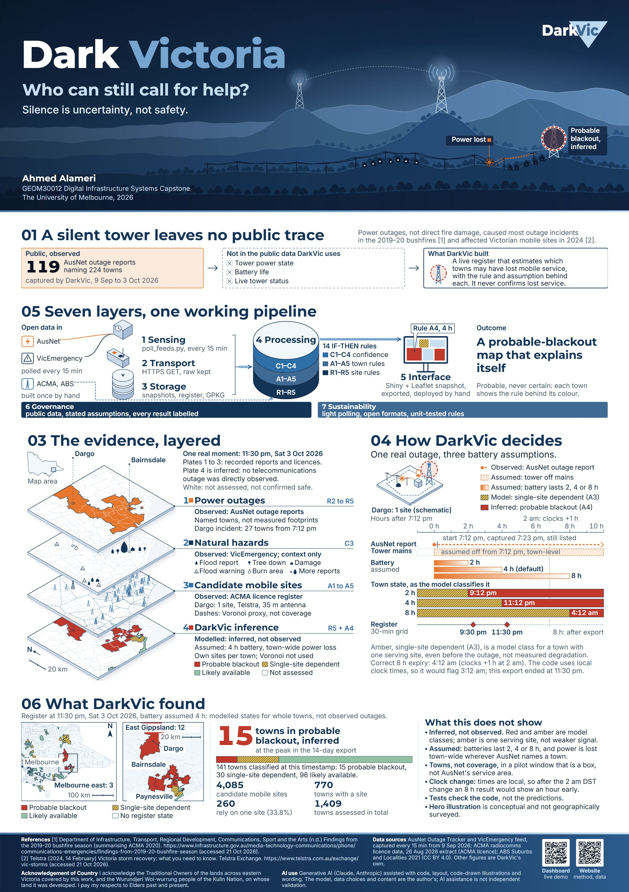
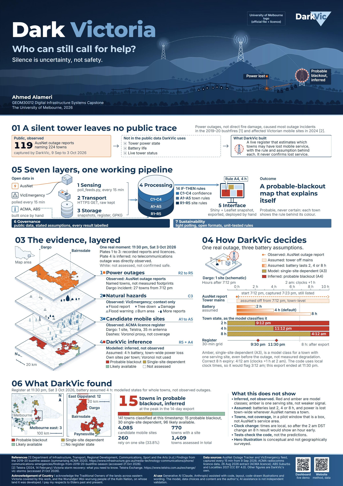
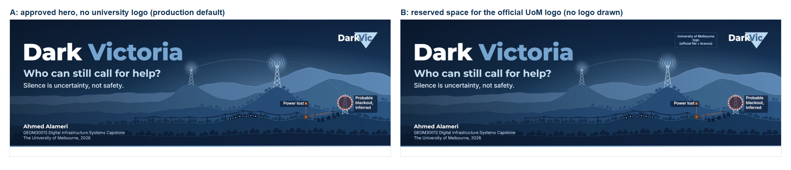
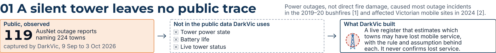
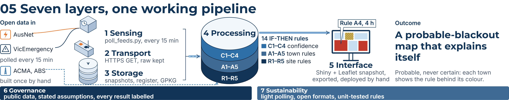
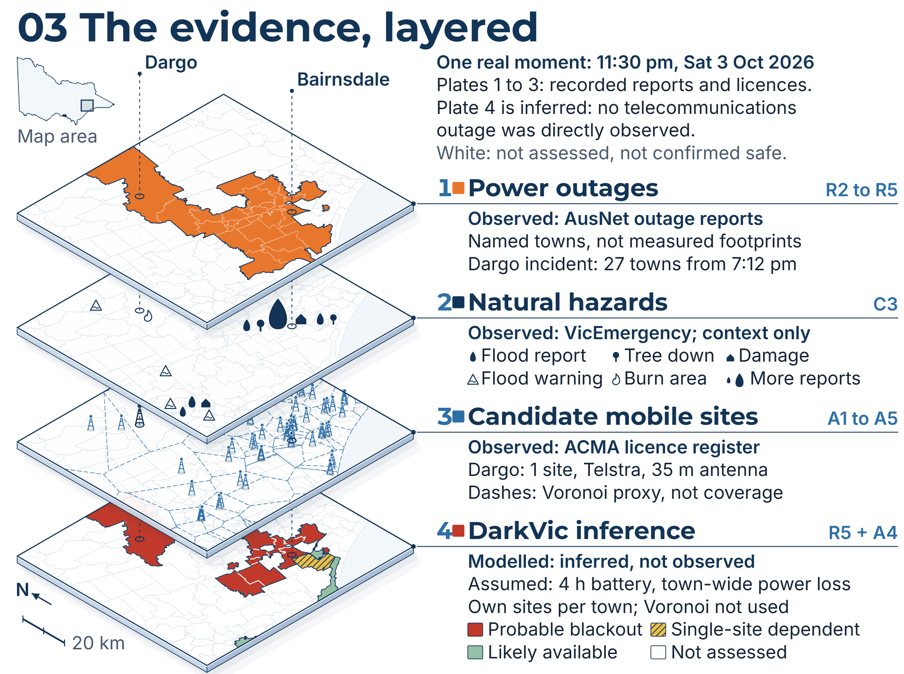
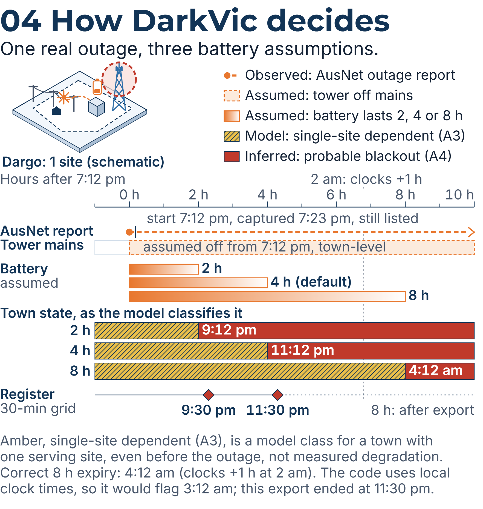
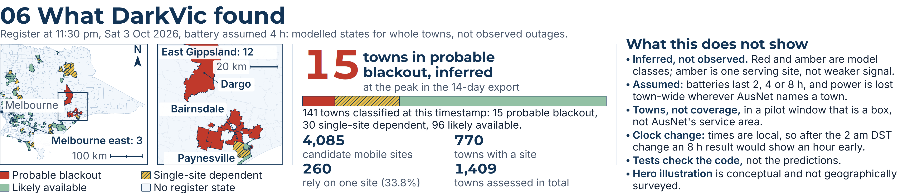
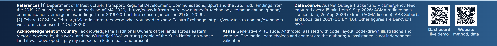

DarkVic A1 poster: Stage 7B review previews (not final)
Updated after Stage 7B corrections (9 Sep start date, DST note, ACMA licence). Review copies only. Full A1 is 594 x 841 mm; sections rendered at 200 dpi. Click an image to open it at full resolution.
1. Full A1, header option A (no university logo, production default)

Full resolution: 00_A1_full_no_logo.png (4200 x 5947 px)
2. Full A1, header option B (reserved space for the official logo; no logo drawn)

3. Header comparison

4. Section 01, problem and contribution

5. Section 05, architecture

6. Section 03, evidence stack

7. Section 04, decision timeline

8. Section 06, results

9. Footer
